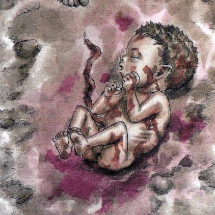
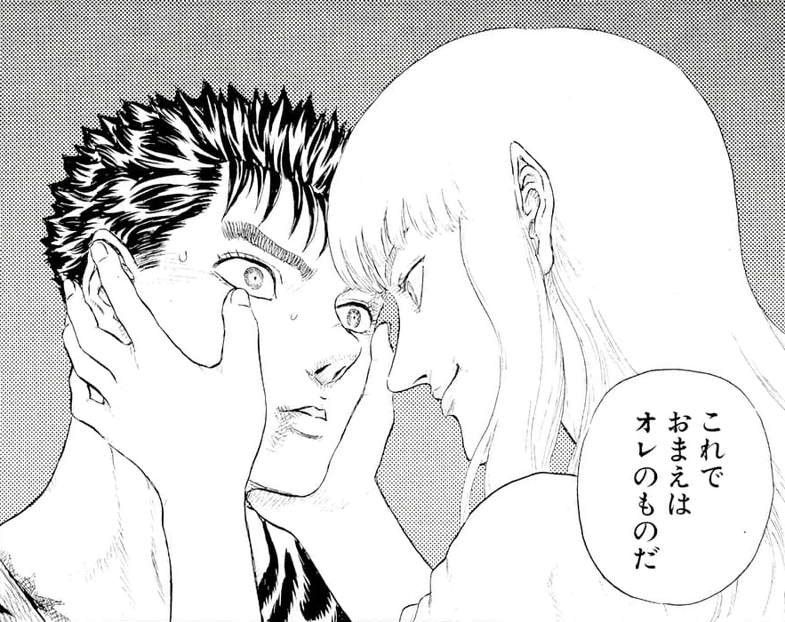

Guts , renowned as the "Black Swordsman" , is a former
mercenary and branded wanderer who travels the world in
a constant internal struggle between pursuing his own ends and upholding his attachments to those dear
to
him.
At one time driven solely by his will to survive, Guts finds purpose in life
upon joining the Band of the
Falcon, greatly helping in the faction's storied successes during the Hundred-Year War as captain of the
band's raiders. He eventually becomes dissatisfied with clinging to Griffith's dream and departs from
the
band in pursuit of his own.
Following the horrors of the Eclipse prompted by Griffith, Guts
embarks
on a two-year war against the God Hand and apostles, becoming increasingly embittered on his one-track
quest
for retribution. He in time realizes protecting his regressed lover is more important to him, as well as
something he cannot do alone, and thus puts aside his quest for revenge while fostering camaraderie with
new companions.
Known for his air of austerity, Guts is a gruff, cynical man holding an overall bleak outlook on life.
This is a consequence of enduring waves of suffering and numerous betrayals since his youth, as nearly
all highlights of his life have, in time, become lows. In spite of his guarded, brooding exterior, he
shows a more easygoing, compassionate side around the people he trusts, appearing markedly less
unsociable and distant, though still retaining his dry candidness. Even as his inner darkness festers
deep within him and its temptation becomes increasingly harder to resist, he retains his empathy and
compassion, refusing to discard his humanity.
In his formative years, Guts is devoid of true
purpose in life, killing as a child mercenary merely as a means to survive. As a blank slate, he often
finds himself seeking validation from those he respects most, content so long as "one person [looks his]
way". His precariousness slowly develops into individuality upon meeting Griffith – someone whom he
eventually seeks to stand beside as an equal, rather than be looked down on by. The swordsman then
embarks on a journey of self-discovery, in which he comes to acknowledge his lifelong bond with and
passion for the sword. Upon realizing this, he begins devoting himself to honing his craft and fighting
ever stronger adversaries, having a newfound purpose in life through this.
Background

Guts was born from the corpse of his lynched mother underneath a hanging tree, where he was left to
die
alone in a mire of blood and afterbirth. A mercenary group lead by a man named Gambino eventually
happened upon the grisly site, presuming the infant to be dead. When the baby began wailing, to the
surprise of the mercenaries, an acquaintance of Gambino's, Shisu, immediately took to the child and
came
to his aid. Gambino allowed the woman to keep Guts for her own personal consolation, despite the
circumstances of Guts' birth being considered ominous by his cohorts. Three years later, Guts'
surrogate
mother contracted the plague, dying as he watched on.
Under Gambino's tutelage, Guts began honing his swordsmanship at six years of age, and joined the
mercenary's band three years later, looking up to his leader as a father figure of sorts. On the
night following Guts' first skirmish, a mercenary named Donovan ambushed and raped him in his tent,
revealing he bought the boy for a night from Gambino. In a following skirmish, the young mercenary
isolated Donovan and eliminated him, refusing to believe the man's claim from the previous night.
he fell unconscious, eventually being
discovered by and enlisted as a child soldier in another mercenary band that happened upon him.As a
result of being on the losing side of battle, Guts and his fellow mercenaries were captured and intended
to work as laborers for their captors. On their way to the castle they were to help construct, Guts met
a man named Martino, who aided and befriended the injured young mercenary on their trek, even seemingly
helping him escape.
Story

During the siege of a military garrison defended by the Band of the Falcon, Guts joins the fray
alongside a mercenary band and narrowly defeats an enemy leader named Bazuso, lowering the enemy's
morale and allowing for the fort's capture. In his travels, he is attacked by Band of the Falcon
mercenaries seeking to claim his reward and exact revenge for his earlier interference. He easily
dispatches most of them until he is met by Griffith, who quickly incapacitates the swordsman and has
him brought to the band's encampment.Waking several days later, Guts is given by Griffith the option
to join the band, though he promptly
refuses, instead opting to challenge Griffith to a duel.
He stipulates that the White Falcon can lay
claim to him in the advent of defeating him in combat. Harboring a vested interest in Guts, Griffith
agrees and the two engage in a sensational battle, with the White Falcon ultimately defeating the
swordsman and enlisting him as a member of the Band of the Falcon. (e.t.c....)
Subduing and tiring her out, Guts asks why she became a mercenary to begin with, to which she explains
the reason for her idolization of and devotion to the White Falcon as his sworn sword, as well as
the jarring effect Griffith's desire for Guts had on her. Their conversation is interrupted by the
movements of Tudor troops near their location; realizing enemy forces will soon home in on the area,
they decide to depart after sunset.(e.t.c....)